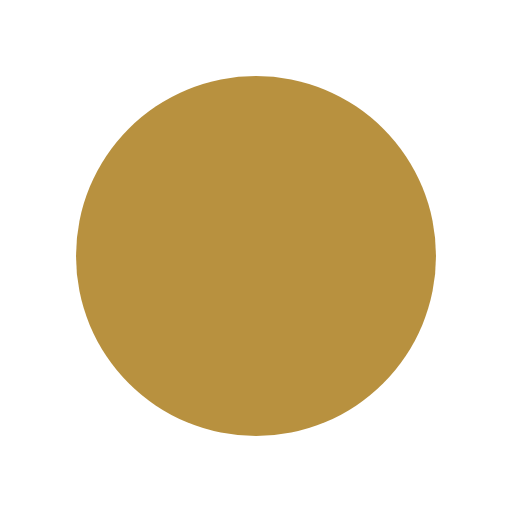

Astrology Grimoire
Full Snow Moon
The Snow Moon earns its name from the heavy snowfall that blankets colder regions during this lunation. Winter still has a firm hold, and the themes of the previous Wolf Moon carry forward: scarcity, cold, and the need for endurance. Storms accent this cycle, which is why warmer climates may know it as the Storm Moon, Hunger Moon, or Wild Moon. The name Chaste Moon speaks to a quieter quality, a sense of purity and innocence hovering at the threshold of spring, while Quickening Moon hints at the first stirrings of life beneath the frozen surface.
Energy during this cycle tends to stay turned inward. Home activities take center stage, and many practitioners find themselves drawn to astral work, banishing, and protective magick. At the same time, this lunation overlaps with Imbolc, the light festival that calls the coming spring forward. Purification and the renewal of hope define this intersection. The increase in daylight is becoming harder to ignore now, and the spring equinox is visibly approaching.
The character of this moon can shift depending on when in the month it falls. An early February full moon still carries deep winter's weight, while a late February full moon already feels the quickening of spring. Both ends of the spectrum are worth working with.
Magickal Workings
Refresh your energy and direct your practice toward both hearth and spirit. This is ideal timing for cleansing rituals, banishing what no longer serves, and healing work that prepares you for the season of renewal ahead. Think about what you want to rebirth in your life and do the inner work, whether through shadow exploration, energetic clearing, or restorative rites, to make space for it. Use any remaining wintertime stillness for deep internal reflection, then begin reconnecting to a sense of childlike wonder and possibility. The Snow Moon is the bridge between endurance and renewal: honor both.